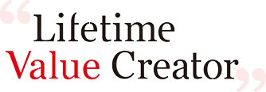
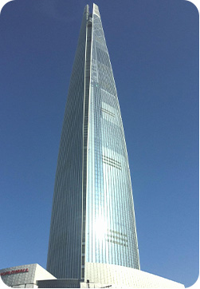

HOME > 회사소개 >
기업비전
기업비전

새로운 50년을 향한 다짐
롯데는 미래 50년 동안에도 지속가능한 성장을 이룰 수 있도록 그룹의 성장 방향을 질적 성장으로 전환하고, 이에 맞춰 새로운 비전을 선포하였습니다. “Lifetime Value Creator”에는 롯데의 브랜드를 통해 고객에게 전 생애주기에 걸쳐 최고의 가치를 선사하겠다는 의미가 담겨져 있습니다.
미래전략
'무엇을, 왜, 어떻게 할 것인가?' 를 제시하는 롯데만의 사업 중심점을 제시합니다. 사업에서 성공의 핵심은 사람과 탁월한 전략에 있습니다. 롯데 그룹의 미래전략은 바로 이런 전략의 원칙을 담고 있습니다.
-

- 지속 가능한 성장률 확보
- 미래 생존을 담보한 수준의 규모 성장
- 해당 산업 성장률을 상회하는 수준의 성장률 확보
-
- 경제적 부가가치 창출
- 근원적 경쟁력에 기반한 수익 가치 창출
- 주주와 채권자의 기대수익을 뛰어넘는 부가가치 창출
-

- 미래 가치 창출
- 미래를 위한 선제적 활동과 투자
- 미래성장이 담보되는 수준의 현재와 미래의 균형 있는 투자
-
- 시회적 가치 지향
- 사회 모범적 성장 및 가치 창출
- 사회와 함께 성장하며, 함께 가치를 창출